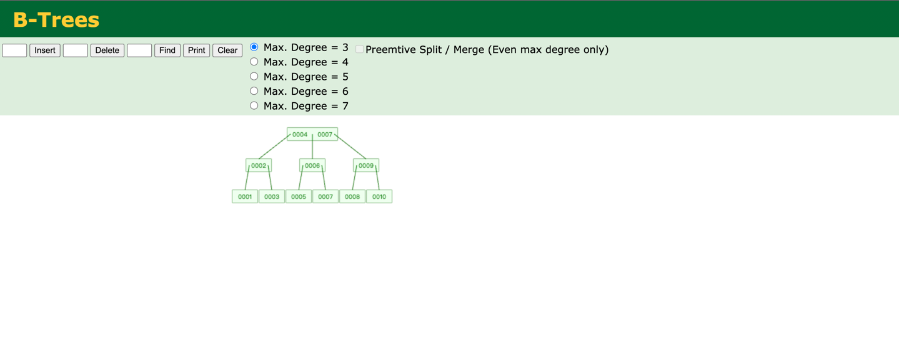

# Mysql索引数据结构
索引是一种单独的、物理的数据结构对数据库表中一列或者多列值进行排序的一种存储结构， 也就是说：索引是帮助Mysql高效查询数据的数据结构，索引是存储在磁盘中的 索引的数据结构为：Hash表和B+树
# Hash ：

- Hash的索引数据结构是通过Hash表来保存索引的
- Hash 是无序的（类似UUID），要是进行范围查找的话就需要扫描全表。
- Hash 值可能存在相同的情况（Hash碰撞、Hash冲突） ，就需要在循环去比较
- 在需求是查询单条数据的时候可以选择Hash索引，因为Hash索引精准查询最快，比如： 是依赖于这种 where name= "mengqizhang" 这种查询，就在name字段上建立hash索引。 其他场景下选择B+Tree索引。
# B+Tree
B+树结构示意图

- 数据只会存在叶子节点上
- 叶子节点之间加上了链表的关联指针
- B+树在节点的数据存储上进行了优化，B树和B+树共同点是一个节点可以存储两个子节点，并且B+树在非叶子节点上不在存放数据（指存放key），这个key就是数据指针地址（数据的key）。
- 上面的1 和 10 既是叶子节点又是非叶子节点，所以这种情况下查询稍微慢些
- 上面的B+树就是非叶子节点，多了下面的一个叶子节点，叶子节点通过链表进行了排序（从小到大），所以范围查询的时候更高效，在mysql中order by的字段需要加上索引，
- 叶子节点包含了非叶子节点的所有数，叶子节点存 数据的key 和 数据，因此B+树遍历整个树只需要遍历叶子节点即可，而B树则需要从根节点一层一层遍历。
- 非叶子节点只存储 key（数据的key），通过key（数据的key）值找到链表再查询到value值（value就是数据）
B+树插入数据效果如下图：


{kind=link}
B+树查找数据效果如下图：

B+树解决了回旋查找的问题，就是通过链表进行查找（可以通过范围查询，B树进行范围查询则需要回旋查找） 所以mysql中排序需要使用索引排序，因为非叶子节点已经排序好了 （链表从小到大排序）
B树数据结构的索引可以使用在： = 、 > 、 >= 、 < 、 <=、between 运算符的列上比较。并且如果 LIKE 查询不是以通配符开头的常量（"%mengqizhang%"），那么也能使用B树索引进行查询
如下查询会走索引：
SELECT * FROM tbl_name WHERE key_col LIKE 'Patrick%';
SELECT * FROM tbl_name WHERE key_col LIKE 'Pat%_ck%';
如下查询不会走索引：
SELECT * FROM tbl_name WHERE key_col LIKE '%Patrick%'; // 用了通配符 %开头，不走索引
SELECT * FROM tbl_name WHERE key_col LIKE other_col; // other_col 不是一个常量值，而是一个字段，也不走索引
2
3
4
5
6
7
问题： 为什么平时数据库表的主键都是要求自增的呢？ 不管是mysql的id自增，还是分布式算法的自增：
这颗B+树的数据按顺序写入,但是跳过了4,如果后面插进来一个4的key,那树为了维持节点的平衡,就会进行左旋或者右旋,
在数据量大或者写入密集的情况下,自平衡的动作是非常消耗资源的,所以为了避免这种情况,我们就要让写入的key按顺序自增
2
# B树
结构示意图

- B树中每个节点都存储数据：
- B树叶子节点中没有指针连接
B树每个节点不仅存了数据的key只，还存放了数据。 每页的存储空间是有限的， 如果数据比较大，那么存储的key值就会少，并且会影响树的高度，如果树变高了，从而增加了磁盘的IO，影响查询的效率
B树和B+树有个共同特点就是一个节点可以存储两个值 
{kind=link}
B树插入数据效果如下图：
 B树查找数据效果如下图：
B树查找数据效果如下图：

缺点： 回旋查找比较费劲 比如需要查找5之后的数据，首先需要查找到5，然后再网上查找到 6 ， 再7，再 8 和 9 B+树解决了这一个缺点，原因是非叶子节点采用了链表的方式存储了所有的数据。
# 平衡二叉树 AVL TREE
基于二叉树之上，平衡二叉树解决了二叉树容易失衡的缺点，保证节点最多两个叶子节点，并且左边一定小于右边
平衡二叉树插入效果如下：

平衡二叉树查找数据效果如下：

平衡二叉树如果树越高，查找速度就会越慢。 平衡二叉树到B树（一个节点可以存储两个值），高度变矮了，所以B树的查找速度会比二叉查找树快。
缺点： 平衡二叉树每个节点下的叶子节点只能有2个，导致树阶很高，所以容易造成IO次数过高。
# 二叉树

如上图所示，这是一个普通的二叉树，它有如下特点：
- 左边节点小于右边节点
- 每个节点最多就只有2个叶子节点
二叉树查找也就是折半查找方法，查找和插入的时间变成了O(log(N))，确实一定程度上减缓了io次数

缺点：容易失衡